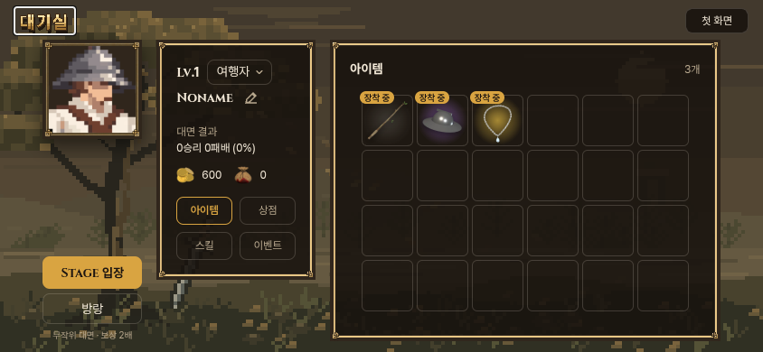
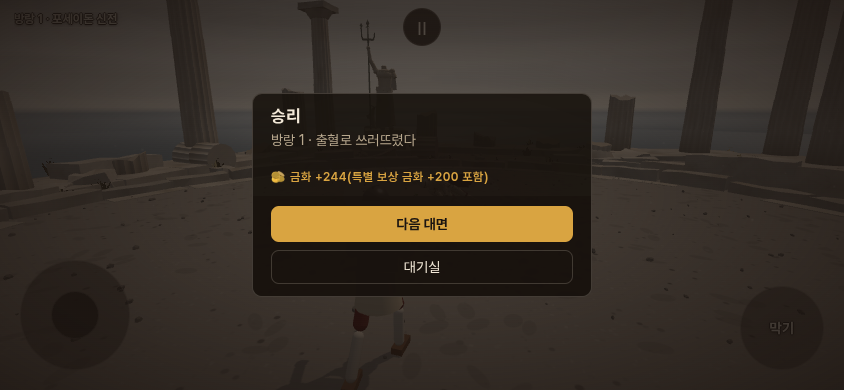

방랑
모든 무대를 마친 뒤, 무대와 상대를 무작위로 만나는 연속 대전입니다.

실제 모바일 대기실 · 일반 Stage 입장과 별도의 방랑 버튼체험판은 해금된 상태로 시작하며, 기존 게임의 지갑·진행 기록과 분리됩니다.
보상
- 현재 일반 보상의 두 배: 낮 승리 20~60, 밤 승리 40~120금화.
- 참수 재화 2개. 패배 차감은 일반과 동일합니다.
- 아르토리아·롤랑 승리 보너스 금화 200.
- 몽골 장수 승리 보너스 목 5개. 참수하지 않아도 지급합니다.
- 패배하면 연속 대전이 끝나고, 재입장하면 새 조합으로 시작합니다.

보상 연결 검사 화면 · 승리 상태를 재현해 지급과 저장을 확인올리비에는 이번에 외형을 전달하며, 방랑 출현과 별도 보상은 아직 추가하지 않았습니다.